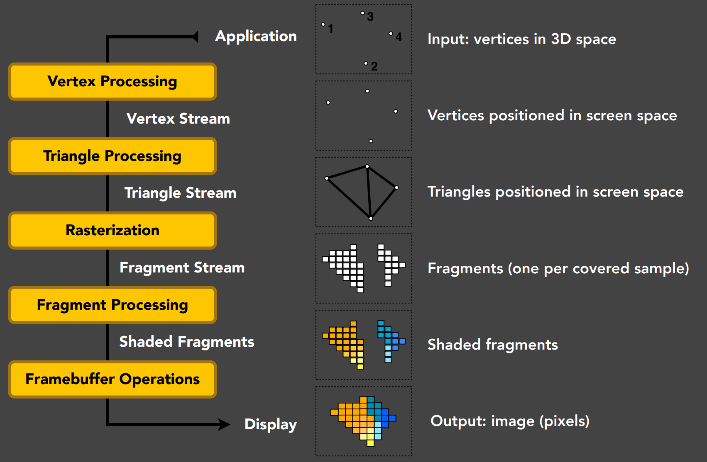

GAMES202_Lecture_02 (ucsb.edu)
Basic GPU Hardware Pipeline
OpenGL
OpenGL Shading Language (GLSL)
The Rendering Equation
Calculus
From vertices to images.

MVP Transformation
Sampling Triangle Coverage
Convert triangles to fragments
Z-Buffer Visibility Tests
Test which triangle is closer to the eye (which triangles can be observed)
Shading
Blinn-Phong Reflectance Model
Texture Mapping & Interpolation
Based on texture coordinates
Barycentric interpolation
OpenGL is a set of APIs that call the GPU pipeline from CPU
Therefore, the caller language does not matter. We care more about how to call GPU functions.
Cross-platform
Alternatives:
DirectX (Windows-only, object-oriented)
Vulkan
...
Cons
Fragmented: lots of different versions
Community-based software
C style, not easy to use
Cannot debug (?)
Understanding
One-to-one mapping to our software rasterizer in GAMES101.
Important Analogy: Oil Painting
Place objects/models
Set position of an easel
Attach a canvas to the easel
Paint to the canvas
(Attach other canvases to the easel and continue painting)
(Use previous paintings for reference)
In OpenGL (one-to-one):
(Place objects/models) Model specification and transformation:
User specifies an object's vertices, normals, texture coordinates and send them to GPU as a Vertex Buffer Object (VBO)
Very similar to .obj files
Use OpenGL functions to obtain matrices
e.g., glTranslate, glMultMatrix, etc.
No need to write anything on our own.
(Set position of an easel) View transformation, Creating and Using a Framebuffer:
Set camera (the viewing transformation matrix) by simply calling e.g., gluPerspective:
void gluPerspective(GLdouble fovy, GLdouble aspect, GLdouble zNear, GLdouble zFar)(Attach a canvas to the easel) One Pass in OpenGL. Specify a framebuffer to use:
Multiple Render Target: Specify one or more textures as output (shading, depth, etc.)
Render (fragment shader specifies the content on each texture)
(Paint to the canvas) For each vertex/primitive, ..., in parallel:
For example, how to perform shading.
For each vertex in parallel:
OpenGL calls user-specified vertex shader: transformation matrices, other ops.
For each primitive, OpenGL rasterizes:
Generates a fragment for each pixel the fragment covers, along with all the necessary properties of that fragment
such as texture coordinates
For each fragment in parallel:
OpenGL calls user-specified fragment shader: Shading and lighting calculations
We may assume that interpolations have been done on the input fragment.
OpenGL handles z-buffer depth test unless overwritten
(Attach other canvases to the easel and continue painting)
Same as 3.
(Use previous paintings for reference) Multiple passes
Use your previous painting for reference
Summary: in each pass:
Specify objects, camera, MVP, etc.
Specify framebuffer and input/output textures
Specify vertex/fragment shaders
(When you have everything specified on the GPU) Render!
Finally, we can do multiple passes.
For example, shadow mapping.
Basically, it is a State Machine.
The "real" action that we care about the most:
User-defined vertex/fragment shaders
Other operations are mostly encapsulated
Even in the form of GUIs, as what it is in some engines.
Vertex/Fragment shading described by small programs
Written in language similar to C but with restrictions
Long history. Cook's paper on Shade Trees, Renderman for offline renderings
In ancient times: assembly on GPUs!
Stanford Real-Time Shading Language, work at SGI
Still long ago: Cg from NVIDIA
HLSL in DirectX (vertex + pixel)
High-Level Shading Language
GLSL in OpenGL (vertex + fragment)
Initializing
Create shader (Vertex and Fragment)
Compile shader
Attach shader to program
Link program
Use program
Shader source is just sequence of strings.
Similar steps as when compiling a normal program.
x
// Basically, you first get a string which describes shader in shading language// Then you call APIs to compile itGLuint initshaders(GLenum type, const char *filename){ // Using GLSL shaders, OpenGL book, page 679 GLuint shader = glCreateShader(type); GLint compiled; string str = textFileRead(filename); GLchar *cstr = new GLchar[str.size() + 1]; const GLchar *cstr2 = cstr; // Weirdness to get a const char strcpy(cstr, str.c_str()); glShaderSource(shader, 1, &cstr2, NULL); glCompileShader(shader); glGetShaderiv(shader, GL_COMPILE_STATUS, &compiled); if (!compiled) { shadererrors(shader); throw 3; } return shader;}
// After compilation, you attach the compiled shaders to the program// You then link the program. If linking succeed, you start to use the program (to draw things, etc.)GLuint initprogram(GLuint vertexshader, GLuint fragmentshader){ GLuint program = glCreateProgram(); GLint linked; glAttachShader(program, vertexshader); glAttachShader(program, fragmentshader); glLinkProgram(program); glGetProgramiv(program, GL_LINK_STATUS, &linked); if (linked) glUseProgram(program); else { programerrors(program); throw 4; } return program;}
x
attribute vec3 aVertexPosition;attribute vec3 aNormalPosition;attribute vec2 aTextureCoord;
uniform mat4 uModelViewMatrix;uniform mat4 uProjectionMatrix;
varying highp vec3 vFragPos;varying highp vec3 vNormal;varying highp vec2 vTextureCoord;
void main(void) {
vFragPos = aVertexPosition; vNormal = aNormalPosition;
gl_Position = uProjectionMatrix * uModelViewMatrix * vec4(aVertexPosition, 1.0);
vTextureCoord = aTextureCoord;
}Important Concepts:
attribute: attributes per vertex (which means fragments don't have attributes)
From model specification
uniform: global variables
varying: variables that needs to be interpolated and will be used inside the fragment shader
highp: high precision
gl_Position: variable provided by OpenGL API that describes the new position of the vertex
xxxxxxxxxx
#ifdef GL_ESprecision mediump float;#endif
uniform int uTextureSample;uniform vec3 uKd;uniform sampler2D uSampler;uniform vec3 uLightPos;uniform vec3 uCameraPos;
varying highp vec3 vFragPos;varying highp vec3 vNormal;varying highp vec2 vTextureCoord;
void main(void) { if (uTextureSample == 1) { gl_FragColor = texture2D(uSampler, vTextureCoord); } else { gl_FragColor = vec4(uKd,1); }
}Important Concepts:
sampler2D: a texture object that can be queried
gl_FragColor: variable provided by OpenGL API that describes the color of this fragment
Multiple Render Target: write to other variables inside the fragment shader to generate multiple outputs
Years ago: NVIDIA Nsight (pronounced as insight) with Visual Studio
Multiple GPUs are needed for debugging GLSL
Had to run in software simulation mode in HLSL
Now
Nsight Graphics (cross-platform, NVIDIA GPUs only)
RenderDoc (cross-platform, no limitations on GPUs)
Personal Advice (from Prof.)
Print it out by showing values as colors
In real-time rendering (RTR)
Visibility
Sources for direct illumination and global illumination have been taken into consideration
BRDF is often considered together with the cosine term
Represent incident lighting from all directions
Usually represented as a cube map or a sphere map (texture)
A new representation will be introduced in this course
Global Illumination = Direct Illumination + One-Bounce Indirect Illumination + ... (Multiple-Bounces)